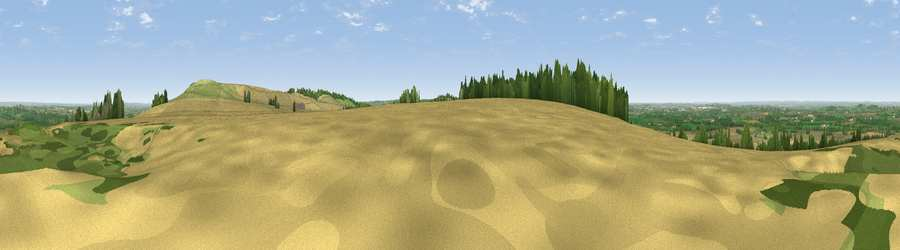

Viewpoint near Woolstone
#10310 in England · top 16% of its area beats it · near WoolstoneWhere it is
The exact computed spot (SU 28375 86125). Click the marker for map links.
The view, rendered

A 360° render of this exact spot computed from the terrain model, tree cover and land cover — summer colours, afternoon light, calibrated against photographs of famous viewpoints. Real trees, hedges and buildings will differ in detail.
The panorama
Grey silhouette: terrain skyline in each direction (720 bearings, Earth curvature and refraction included). Dashed green: skyline with trees (+15 m) and buildings (+8 m) as obstacles. Blue strip: how far the ground is visible on each bearing.
Where the view opens
Wedge length = distance to the farthest visible ground on that bearing (vegetation-aware). Rings at 10, 25 and 50 km.
What fills the view
61% cropland · 26% grassland · 10% woodland · 2% built-up
Angular shares of the visible panorama (visual magnitude), not map area. Landscape diversity 0.43 (0–1 Shannon).
Key numbers
More beautiful places nearby
The staircase of upgrades: each row has a higher view potential than everything closer. Driving times are estimates from straight-line distance, calibrated against real road routing — check an actual route before setting out.
| Place | Direction | Drive | Score |
|---|---|---|---|
| Woolstone Hill | ENE · 1 km | ~3 min | 66.9 |
| Viewpoint near Woolstone | E · 2 km | ~4 min | 76.7 |
| Martinsell viewpoint | SSW · 25 km | ~40 min | 77.3 |
| Viewpoint near Leckhampton | NW · 46 km | ~67 min | 77.8 |
| Viewpoint near Great Witcombe | NW · 48 km | ~69 min | 80.5 |
| Nottingham Hill | NW · 52 km | ~73 min | 80.9 |
| Bredon Hill | NNW · 63 km | ~86 min | 83.0 |
| Millennium Hill | NW · 75 km | ~98 min | 86.9 |
51.57328, -1.59196 · source: screening · position refined by local search. Computed location — check access rights before visiting.